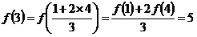
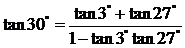
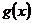
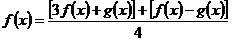

数学试题分析报告
一、 选择题
1．设扇形圆心角为，面积为，将它围成一个圆锥，则此圆锥的表面积是（ ）
A． B． C． D．
【答案】 B
【解析】设扇形的半径为R，由题意得
，扇形弧长为，故圆锥的底面半径为1，圆锥的表面积是 ．
．
【点评】在天学网校自主招生强手营第一阶段的讲义中，我们讲解了弧度制和角度制的关系与由来，此题求出扇形弧长并由此给出圆锥底面圆的半径即可。
【难度】较低
2． 将10个人分成3组，每组人数分别为3，3，4，则不同的方法（ ）种．
A． B． C． D．
【答案】C
【解析】首先任取3人有种取法，剩下的在7人里面取3人有 种取法，最后剩下4人，但由于先取的3人和之后取的3人（人数相同）不存在先取和后取的排列，因此总的分法数为
种取法，最后剩下4人，但由于先取的3人和之后取的3人（人数相同）不存在先取和后取的排列，因此总的分法数为 ．
．
【点评】在天学网校强手营第一阶段讲义中，我们讲授映射法解排列组合题目时给大家特别补充提到的一个“分堆分组问题”，这道题目是典型的“分堆”。
【难度】中等
3．
函数 满足：对于任意的实数有
满足：对于任意的实数有 ，已知
，已知 ，，则的值是（ ）
，，则的值是（ ）
A． B． C． D．
【答案】B
解：由和 得，
得，
，
．
猜想，由第二数学归纳法证明如下，
假设对都成立，则
由可变为得，
，
，
所以猜想成立．则．
【点评】这是一道函数方程的问题，在天学网校强手营第二阶段的课程中，我们对于函数方程做过详细的讲解，这道题目就是我们讲的“特殊函数法”，由于是选择题，答案是存在且唯一的，只需要将函数 看成是特殊的一次函数，问题就迎刃而解了。
看成是特殊的一次函数，问题就迎刃而解了。
【难度】中上。
4． 已知函数的值域是，则实数的取值范围是（ ）
A． B． C． D．
【答案】D
解：由题意得，则说明与x轴有交点，故，解得．
【点评】在天学网校强手营第一阶段的函数一节和第二阶段的函数一节均有此题的原型，含参数的二次函数的复合。
【难度】中等
5． 设均为负数，且满足，则具有（ ）
A．最大值 B．最小值 C．最大值 D．最小值
B．最小值 C．最大值 D．最小值
【答案】D
解：，则，即．
设，易知在上为减函数，所以 不存在最大值，存在最小值，最小值为．
不存在最大值，存在最小值，最小值为．
【点评】均值不等式，在天学网校强手营第一阶段和第二阶段的集合论章节与不等式章节均有讲解。
【难度】中上
6．使得函数成为区间上的奇函数的常数的值是（ ）
A． B． C． D．不存在
【答案】B
解：由题意得，?，且?．
由?得；
由?得，
设，
则，
，
所以，
则；
下面证明： ，两边同时取正切值得
，两边同时取正切值得
左边右边，
所以 ．
．
【点评】函数奇偶性问题，在天学网校强手营第一阶段的讲义中有所涉及，此题只需按照第一阶段讲义中的例题令即可。
【难度】较低
二、 解答题
7. 证明是无理数．
【解析】有理数关于加减乘除四则运算封闭．
反证法：若是有理数，，则也是有理数，
则也是有理数，…，则也是有理数，而是无理数，矛盾，故 是无理数，证毕．
是无理数，证毕．
【点评】 三倍角公式的应用，是天学网校强手营第一阶段和第二阶段课程的共同重点，另外此题涉及到的有理数的封闭性以及反证法也都讲解过。
【难度】难。
8．已知实系数二次函数与满足方程 和
和 只有一对重根，已知
只有一对重根，已知 有两个不同的实根，求证
有两个不同的实根，求证 没有实根．
没有实根．
【解析】若对于 ，，，
，，，
则有，则最多有二等实根，
同理若对于，，，也会矛盾，故二次函数 ，
， 具有不同的开口方向．
具有不同的开口方向．
则若，两个方程具有相同的重根，设其为，
则 ，对称轴为
，对称轴为 ，
，
则对称轴为，具有重根 ，与
，与 有两个不同的实根矛盾，故
有两个不同的实根矛盾，故 ，
， 两个方程具有不同的重根，设其分别为，则
两个方程具有不同的重根，设其分别为，则
，
而等号由于，不能同时取得，即 无解，则无解．
无解，则无解．
【点评】二次函数的问题，在天学网校强手营第二阶段的讲义中开辟了两个专门章节讲过，此题用到了二次函数的两根式，是讲义中原题改编。
【难度】较高。
9．设是等差数列，定义集合，问：可以同时属于M？并证明你的结论．
【解析】A集合中元素，按照适当顺序可以排成等差数列，其首项为 ，末项为
，公差与原数列公差一样，项数为 31 ，令 ，则，其中，且显然不可能．
【评论】不定方程和数列相结合的问题，在数论和数列章节中均有讲解．
【难度】较高。
10．已知为正实数，且满足，求证：
 ．
．
证明：
（1）采用数学归纳法
当 时，，不等式成立．
时，，不等式成立．
假设当 时不等式成立，考虑的情形：由于这个数不能同时都大于1，也不能同时都小于1，因此存在两个数，其中一个不大于1，另一个不小于1，不妨设为
时不等式成立，考虑的情形：由于这个数不能同时都大于1，也不能同时都小于1，因此存在两个数，其中一个不大于1，另一个不小于1，不妨设为 ，从而
，从而
，
（1）
其中推导（1）时利用及的假设，故 时不等式也成立，
时不等式也成立，
综上，不等式对任意正整数n均成立．
（2）采用均值不等式
由均值不等式得
两式相加得
，
．
（3）用恒等展开
左式展开得


由均值不等式得
故
．
【点评】此题在第一阶段和第二阶段的不等式一节中均有涉及，使用数学归纳法或者柯西不等式解题最佳。
【难度】较高
证法一的难点在能否将 个数中的两个数合并为“一个”，从而朝
个数中的两个数合并为“一个”，从而朝 转化，此题，是常见的不等式放缩。此证法也是“调整”基本思想的体现。证法二技巧性很高，但其实就是柯西不等式的证法之一。证法三恒等展开后用均值不等式放缩较易被想到，但难点为恒等展开。
转化，此题，是常见的不等式放缩。此证法也是“调整”基本思想的体现。证法二技巧性很高，但其实就是柯西不等式的证法之一。证法三恒等展开后用均值不等式放缩较易被想到，但难点为恒等展开。
备考建议：
１． 全国一本大纲，不分省命题，因此在复习时应补上没学过的内容；
２． 文理科考查知识点基本相同，因此在复习时应该将在高考中文科不讲的知识点，如排列组合等补上；
３． 侧重对于数学基本思想（如划归转化，分类讨论，数形结合，函数方程等思想）的考查，因此在复习时应注重对于数学的总体认知和思想性问题，尤其是对数学有深远影响的数学思想的学习；
４． 考查内容宽泛，不考偏题怪题，但是考查难题，因此在复习时要采取与竞赛复习不同的策略，可以选取竞赛中的“好题”而不是偏题怪题；
５． 高等数学的知识（如用导数判断函数的单调性、拉格朗日中值定理等）对于解题很有帮助，这也突出了自主招生考试不同于高考的重要区别，因此在复习时要学习一些高等数学的知识。